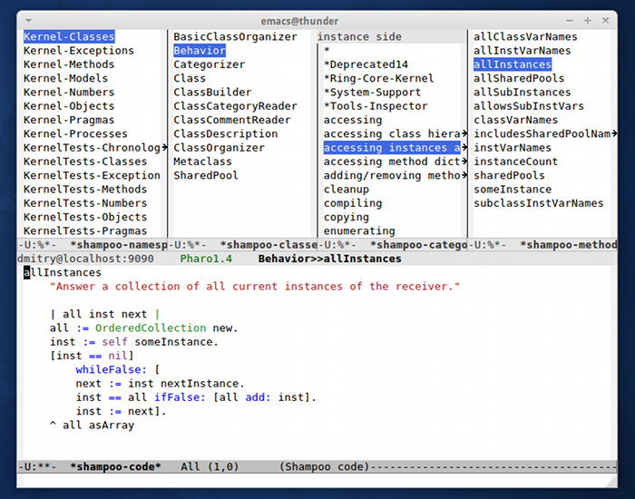
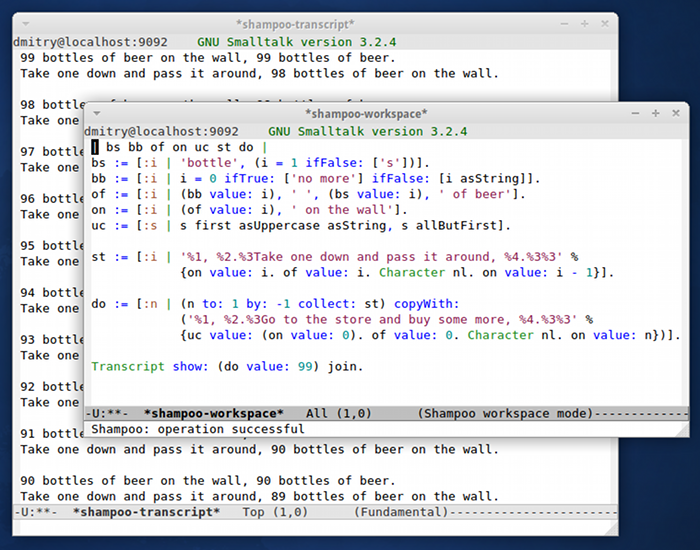

<div id="headnote">
  Shampoo: a set of tools for remote Smalltalk development
</div>
<div id="splash_container">
  <div id="splash" class="splash">
    
    <div class="splashDescription"><strong>Class browser</strong></div>
    
        <div class="splashDescription"><strong>Workspace and Transcript</strong></div>
  </div>

  <script type="text/javascript">
    var splashScreen = Sliderman.slider({container: 'splash', width: 700, height: 550, effects: 'fade',
    display: {
    autoplay: 5000,
    loading: {background: '#000000', opacity: 0.5, image: 'img/loading.gif'},
    description: {hide: true, background: '#000000', opacity: 0.4, height: 50, position: 'bottom'},
    }
    });
  </script>
</div>
